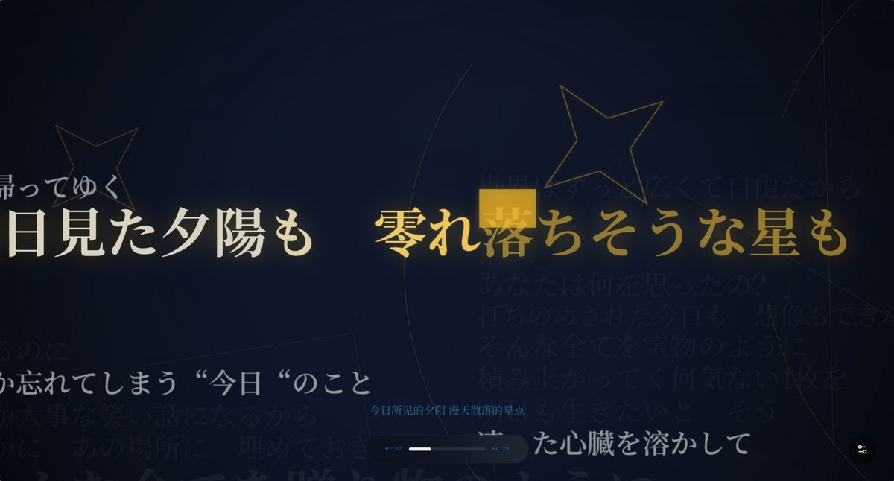
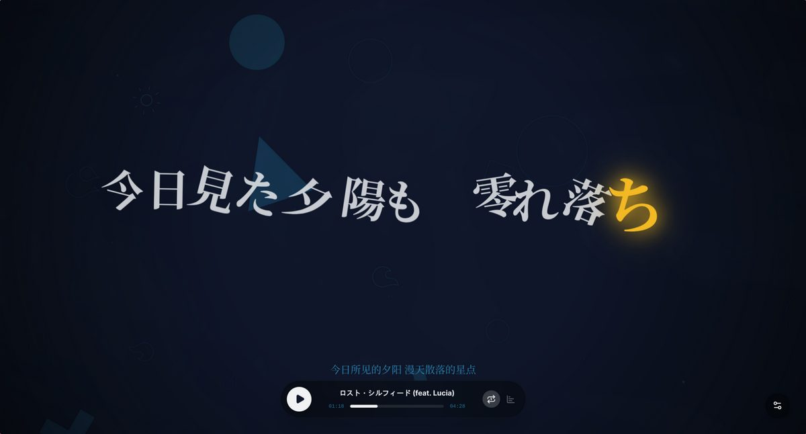
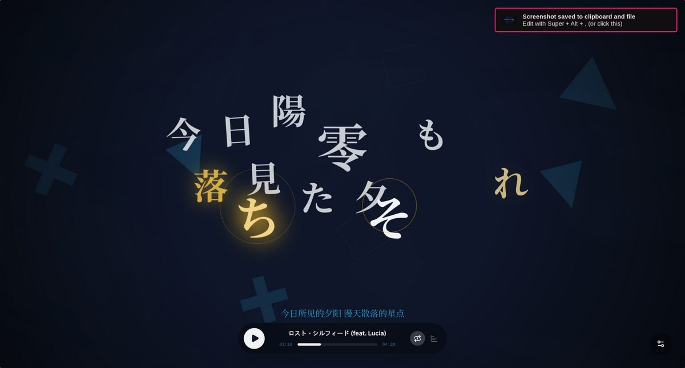
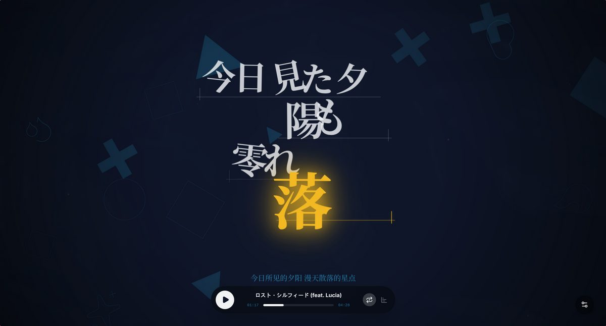
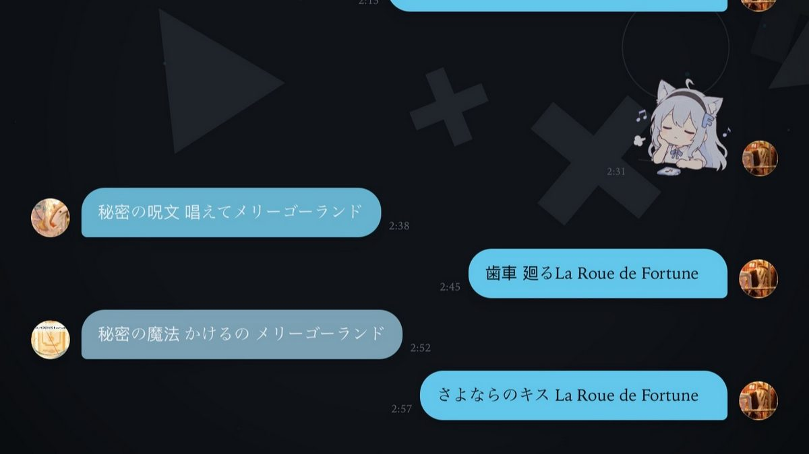
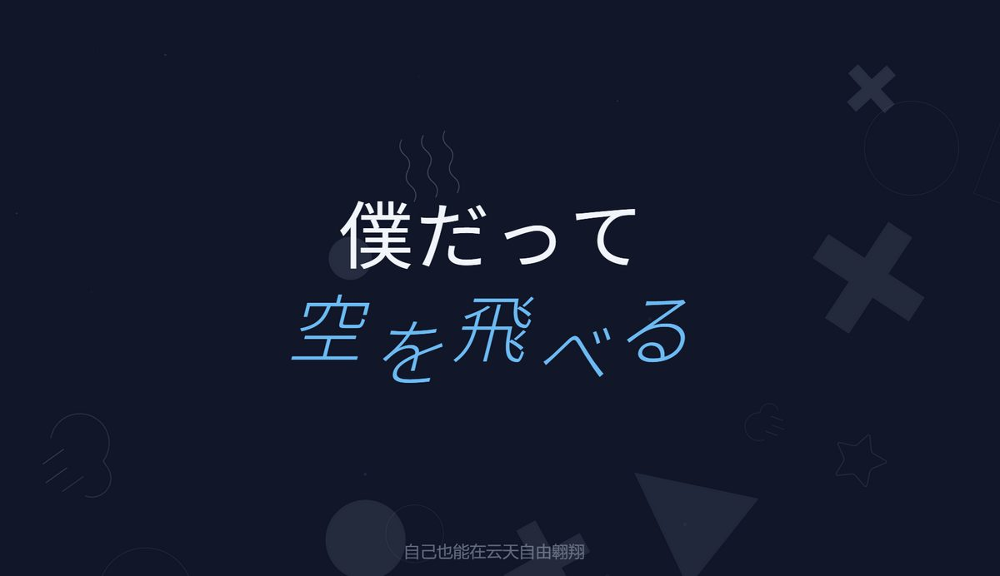
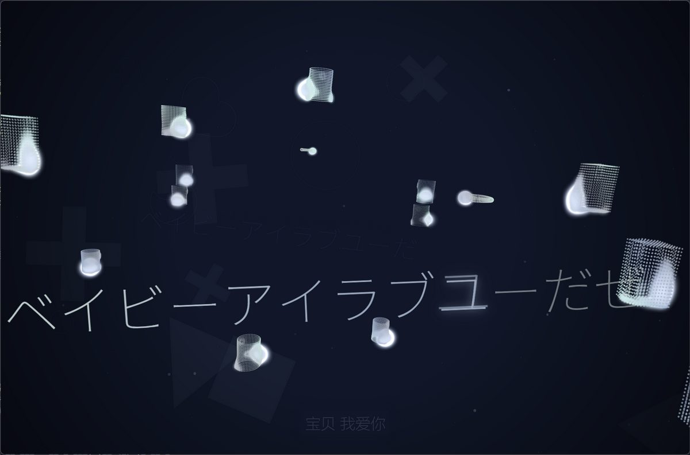
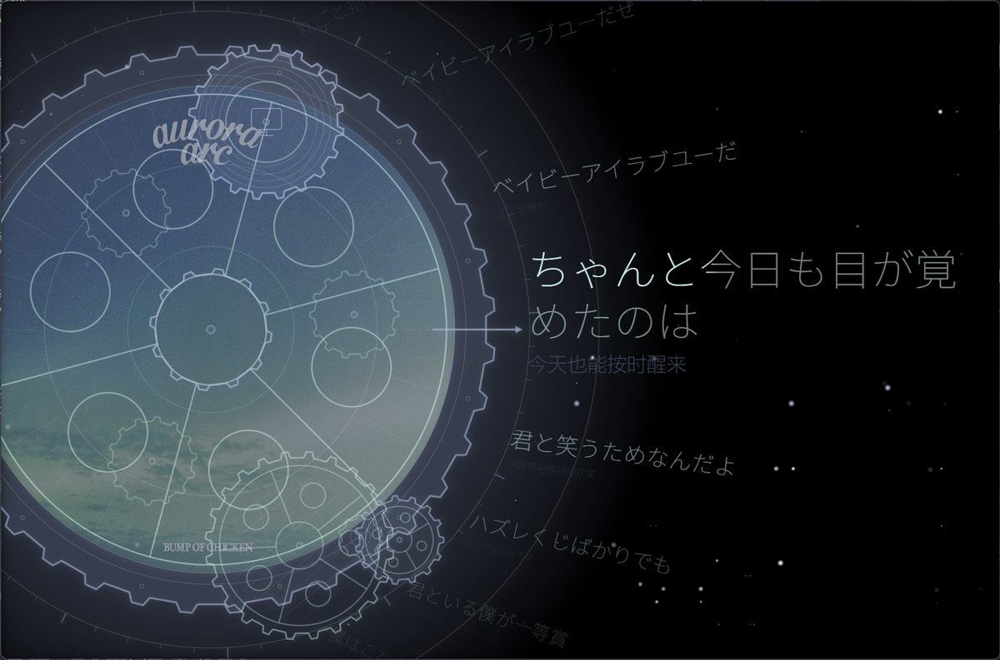

全屏歌词动画
逐字高亮、整句推进、多行排版等多种歌词动画，随窗口尺寸自适应，像文字 PV 一样铺满整屏。
已在正式版中提供
逐字高亮、整句推进、多行排版等多种歌词动画，随窗口尺寸自适应，像文字 PV 一样铺满整屏。
支持网易云、酷狗、QQ 音乐、Navidrome 与本地音乐；桌面端还可接入波点音乐、YouTube Music 与 Spotify。
导入本地音频即可播放，索引信息只保存在本机，不上传任何音频文件内容。
本地歌曲自动匹配在线歌词与封面，匹配错了可以手动修正；同时识别同目录下的 LRC、VTT、TTML、QRC、YRC、KRC 等歌词文件。
根据歌曲情绪与歌词内容生成背景与视觉参数，让每一首歌拥有自己的色彩。
仅桌面版可用，默认关闭。可通过模组添加歌词动画、背景与页面图层，或从模组市场安装经过审查的模组。
真实运行截图
同一首歌，八种排版气质。动画参数可调，自动适配不同窗口尺寸。








现在可以装在
桌面安装包，内置前后端运行环境，装完即用。
已发布桌面安装包，Apple silicon 版本另提供网盘下载。
已发布提供安装包，另有 AUR 与第三方 Flatpak 渠道。
已发布可自托管或用一键部署，浏览器内使用，也能添加到桌面。
已发布原生壳与内置能力仍在开发，暂无公开安装包。现阶段可选 Web 版添加到主屏。
开发中诚实说明
下面的能力正在开发或内测，尚未随正式版发布。写在这里是为了说明方向，不是承诺发布时间。
把网易云、QQ、酷狗、B 站、YouTube Music、Spotify 与本地来源的收藏汇总到一个视图，并支持手动收藏。目前仅在本机开发版内使用，未进入正式版。
收藏、歌单与视觉设置的跨设备同步。协议与服务器端测试已完成，公网入口尚未上线，因此正式版暂未提供该功能。
基于现有 Web 端的原生封装。部分依赖桌面运行环境的能力（如 QQ、酷狗登录与播放）在移动端仍不可用，因此没有发布安装包。